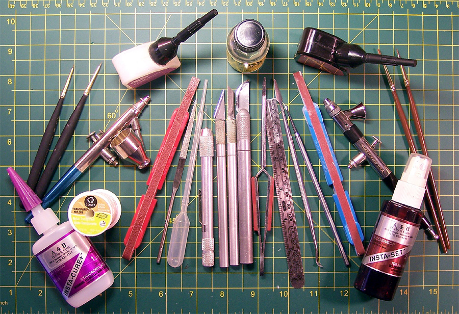
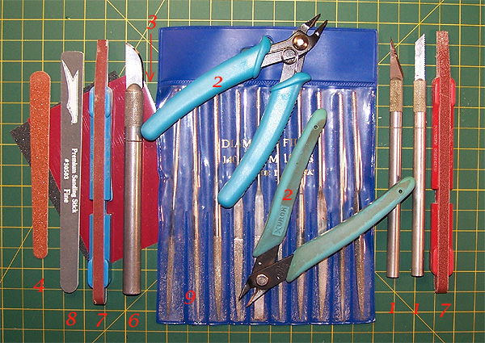
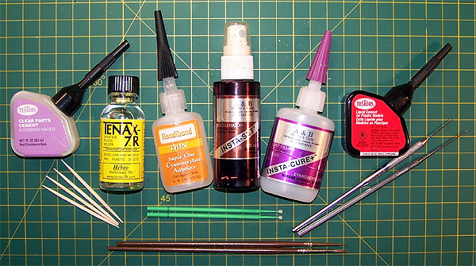
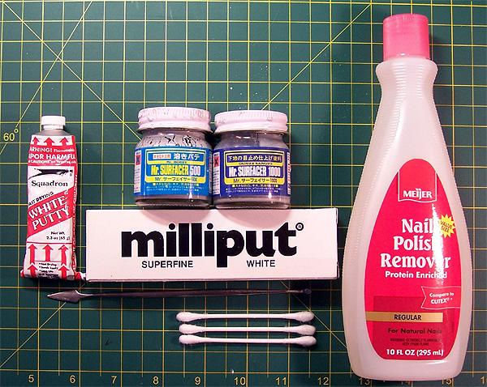
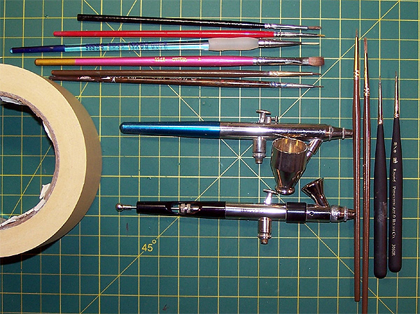
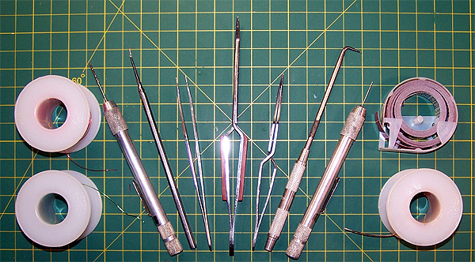
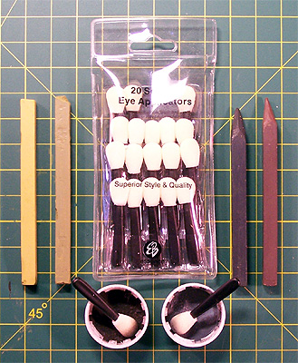
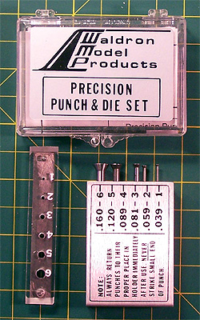

A Modeler�s Toolbox

Images and text Copyright � 2006 by Matt Swan
Exactly what kind of tools and gadgets will you need to begin the polystyrene adventure? There are simply boatloads of tools on the market aimed at modelers of all skill levels but how do you (as a new modeler or one who�s skills are advancing) select what you will need to get the job done and yet be able to hold back as much cash as possible for actual model purchases? Let�s take a look inside a modeler�s toolbox and discuss what you MUST have and what would be nice to have.
The first thing you will need is a surface to work on that will not be damaged by your activities and let�s face it, you will have to deal with a mother/girlfriend/wife who will be less than thrilled to find paint and razor cuts in her tabletop/countertop. The cheapest, simplest way out of this problem is simply a sheet of heavy poster board as a work surface � this is a MUST HAVE. Now it would be nice to have a cutting surface and for just a dollar or two more you can have just that. In the image at the beginning of this article and throughout this article the green backdrop with yellow crosshatching is a cutting mat made by Darice purchased at my local arts and crafts supply store for about three dollars US. Now that we have a place to work that will not result in our significant others getting medieval on us we can look at the tools.
Cutting and Sanding

First thing you will want to do is to remove parts from the injection sprues and get them cleaned up prior to assembly. A variety of cutting and sanding tools will be needed here. First, the
MUST HAVES :
#1 A #1 Xacto Razor Knife Handle with a good supply of #11 blades and a pack of razor saw blades (shown on the right side of the image).
#2 A pair of sprue cutters. Sprue cutters are not your basic wire cutters; they are designed with one side being completely flat so as to not leave much of anything from the sprue on the part. This greatly reduces the chance of damage to the part and reduces the amount of cleanup work required. Pictured are two Sprue cutters, one from Excel and one from Xuron � both work great and cost about $8.00 US.
#3 A pack of wet/dry Testors sandpaper. The pack will include several grit levels of sandpaper which are great for finishing off the sprue gate removal from the part and fixing small blemishes in the plastic. When using these with water they last a really long time. They will be handy in later construction phases also.
#4 A pack of finger nail emery boards from your local drug store.
These four tools are must haves, now let�s talk about a couple items that would be nice to have.
#5 A couple additional #1 Xacto Handles so you don�t need to keep changing blades.
#6 A #2 Xacto Razor Knife Handle with #22 and #23 leaf blades. These give you more options on removal of excess plastic and are handy for advanced modeling (shown on the left side of the image with a #22 blade installed).
#7 Five inch spot sanding sticks (2) with 100 grit and 320 grit papers. These sticks will increase your flexibility in finishing a part or modifying a part.
#8 Squadron sanding sticks. These work like the emery boards but are finer and have some cushioning to help when working on curved surfaces.
#9 A set of Diamond Needle files. These are great when moving into extreme kit modifications and working with vacuformed kits. They increase the durability of the sanding tool and allow more brute force to be applied when needed.
Glues and Adhesives

Now that the parts are cleaned up you�ll probably be wanting to glue a couple things together � it just seems to follow with the program doesn�t it? Keep in mind that some interior areas may need to be painted before assembly, check your kit instructions before gluing anything together and always test fit the parts. When I first began to build models I used that Testors glue that comes in an orange tube, not anymore. I have learned that there are better things and will now share that knowledge with you. First, the
MUST HAVES.
#1 A bottle of liquid glue like Testors Liquid glue in the black bottle.
#2 A box or bag of medium size rubber bands. These will help to hold things together while the glue dries but be careful you don�t let fresh glue wick under the rubber band or you�ll have a mess to clean up.
#3 A bottle of Testors Clear Parts cement. You�ll want this for working with any clear parts as regular modeling glue will fog clear plastic.
With these three items you can assemble most any injection molded plastic model. As you become more advanced and begin to deal with photo etched pieces and resin details you�ll want to expand your glue collection to include:
#4 Tenax 7R. This plastic glue (welder would be a better term) is generally applied with a paint brush and is (in my opinion) the absolute best plastic cement on the market. A close second would be a product called Micro Weld and it is used in the same manner.
#5 A couple of #0 or #1 round paint brushes to apply Tenax or Micro Weld with.
#6 A box of round toothpicks. These are great for applying super-glue with. You will also find many other uses for these as you move through your modeling career.
#7 A bottle of medium gap filling super glue.
#8 A bottle of thin super glue. If you are not using your super glues for long periods of time store them in the refrigerator.
#9 A dental pick or dental probe. These are also great for applying super glue or reaching inside a model to adjust something you might have missed.
#10 A bottle of super glue accelerator. This comes with a spray head that I never use. I apply it with a paint brush and it makes super glue set immediately. This also comes in handy when using superglue as filler and I�ll talk about that later. Accelerator also reduces the chance of super glue fogging or turning white.
#11 A pack or super glue applicators (those are the funny green things at the bottom of the image). Dental picks and toothpicks may be great for applying medium super glue but these applicators are the thing for applying thin super glue.
One last comment on super glues, I use a pad of post-it notes and put a drop of super glue there then use the dental pick or glue applicator to pick up a small amount of glue and get it to the desired location on the model. In this manner you are only using as much glue as necessary to get the job done.
Surface Finishing

So now you have been building and painting some aspects of your model and are reaching a point where you�ll be wanting to paint the majority of the outside of the model. Before you can begin this phase of painting you really should take a good look at the seams of the model and try to smooth out all blemishes because these will show through your paint and seriously detract from the final product. You�ve already got your sanding implements from the first stage but you may need to fill some small areas. Here is what you MUST HAVE to get that job done.
#1 A tube of Squadron White Putty. You can find both Squadron White and Squadron Green putty but I like the White. I feel it has a finer texture and can be sanded to a better finish.
#2 A small potter�s trowel (it�s hiding under the Milliput box in the image). You can pick this tool up at most art supply stores for a buck. This is used to apply the Squadron White Putty.
#3 A box of good quality cotton swabs. Get ones that have a nice tight bond and will not easily shed cotton fibers.
#4 A bottle of acetone based fingernail polish remover. You can find this product in most health and beauty aisles but some are totally water based while others contain acetone. You must get the acetone based product.
With these four items you can handle just about any basic filling issue. Rather than talk about how to use these items here I will direct you to my article on Seam Repair that will open in a new window. For more advanced seam repairs and filling issues here are a few more items that are nice to have in the toolbox.
#5 Gunze-Sangyo Mr. Surfacer 500 and Mr. Surfacer 1000. These are very fine liquid fillers for touching up very small imperfections. You can read more about their uses in this article about Mr. Surfacer.
#6 A packet of Milliput White, superfine. This is a two-part filler material for use in very large repairs or where complete pieces of a model may need to be fabricated.
Sometimes when you want to fill a spot quickly, sand it smooth and move on without waiting for stuff to dry you can use super glue followed by a quick brushing of accelerator. When doing this the super glue will remain slightly soft so you can sand it without tearing up the surrounding plastic. The effect only lasts for about five minutes then the glue becomes harder than the surrounding material. This is a great trick for that fast fill but don�t lose track of that five minute window or you will be in trouble.
Painting

Now it is time to paint your model. If you have any clear parts involved in your build they should be completely masked by this time. For instructions on masking you can read Swanny�s Approach to Masking Canopies. For painting in general this is what you MUST HAVE :
#1 A roll of masking tape. Many modelers like to use the blue, low tack Tamiya tape but I have always used the standard 3M masking tape with excellent results.
#2 Paint Brushes. I like to have a selection of paint brushes ranging from 10/0 fine points to 0 'round' and a couple of wide soft brushes.
#3 Something to clean your brushes with. For acrylic paints I like to use water or Windex. For enamel paints I prefer to use Lacquer thinner but you can also use Testors brush cleaner.
Hey, what�s this!?!? The airbrush did not make it into the MUST HAVE category!!!! You do not need to have an airbrush to paint a model. It certainly does make it easier but I have seem plenty of master class pieces done with a paint brush. The real trick is to thin your paint properly and apply several coats and this is true when working with an airbrush also. Now let�s look at the things that are nice to have in the toolbox.
#4 An airbrush. There are lots of airbrushes on the market and each modeler has his or her personal preferences. I have been a fan of Badger airbrushes for years and use a Badger 150 and a Badger 360. Paasch airbrushes are also very good. My first airbrush was an Aztec and it was so crappy that it nearly stopped me from modeling. Once you move into airbrushes you will need to acquire an entirely new package of skills and add a few additional pieces of hardware like a compressor to feed it. I�m not going to get into the whole airbrush thing in depth here other than to suggest that you ask other modelers you know, talk to hobby shop proprietors or email me directly for specific advice before purchasing a unit.
#5 Plastic pipettes. These are little plastic tubes with squeeze bulbs at the end and are most excellent for measuring paints, thinners and Windex. I buy mine on-line from Lab Safety Supplies in bulk and they end up costing me about three cents each. I have also seen them hanging on racks near paint displays in hobby shops.
Other Useful Tools

In addition to everything I�ve talked about already there are a few other things that you MUST HAVE in your toolbox like:
#1 A metal straight edge ruler. I like to use a slightly flexible 6 inch ruler that is marked in both Standard American English and in Metric. This is useful not only for measuring but for cutting tape on a straight line � sounds simple but can be crucial.
#2 Tweezers, both fine point and broad point. You�ll want these for handling decals and small parts. If you start working with photo etched pieces and resin details these will be a life saver.
#3 A Welder�s Tip Drill. Most towns and cities will have a shop that caters to the local welders. Here you can find the tip drill for under $10.00 and it will include a variety of fine drill bits. If you do not have one of these shops then you can also find them in hobby shops but with slightly higher price tags. Many models come with attachment holes flashed over as options and you will need to open these.
A few other items that can be useful as you advance your skills and move into the realm of scratch building and kit modification are:
#4 A collection of fine wires. I purchased a set of magnet wire (sometimes called fuse wire) from my local Radio Shack that included three rolls of various sizes and has lasted for years. I use these wires almost every day that I am modeling.
#5 A scribing tool. I originally used a steel scribe purchased from an industrial tool supplier but recently discovered the Expert�s Choice Scribing Tool from Bare Metal Foil and have to agree with them � it is the finest scribing tool I have used to date.
#6 A roll of Dymo Label Tape. This is the handiest thing to have should you get into scribing a model or repairing engraved panel lines. For more on scribing you can read A Systematic Approach to Scribing.
Final Touches


Your model is now painted, hope it looks good, and you want to put some of those nice decals on it but wait � you are not ready yet. In your toolbox you should have:
#1 A bottle of Future Floor Polish. This is a must for sealing your model and making decals behave properly. For more on the uses of Future you should read The Complete Future.
#2 A bottle of Micro Set and Micro Sol. These are used to make your decals snuggle down to the surface of the model and make the carrier film disappear. They are generally applied with a soft paint brush.
#3 A bottle of Polly Scale Clear Flat. You�ll use this to seal your decals and give the model a semi-gloss to flat finish. If you wish to have a glossy finish, just use Future instead of the Polly Scale product.
#4 A spool of invisible thread. I buy mine at the local fabric store and once drawn across a black magic marker makes for great antenna material.
If you plan on adding weathering features to your model here are a few additional items that are nice to have.
#5 Eye Shadow Applicators. Yeah, I�m talking about those things the girls use. They are great for applying ground pastel chalks.
#6 Some clean pop bottle tops. These are great for mixing paints and holding ground chalks.
#7 Sticks of pastel chalks. I pick these up at the local art supply store. They carry them in a wide variety of colors and you can mix them to achieve a wide range of results.
#8 A Waldron Punch set. Waldron has retired and discontinued production of his set but it has been purchased by Roll Models and is available again under the Waldron name tag. This set is indispensable when detailing dash boards or scratch building model details.
#9
Another tool that is nice to have is a Dremel. This is a power rotary tool used for cutting, sanding and grinding. Extreme care must be taken when using one of these with plastic as heat can build up quickly and melt your subject. They are very useful when involved in model conversions and there is a wide range of tools that can inserted in the chuck.
There you have it � the must have and the nice to have items that should be in every modeler�s toolbox. I have mentioned several items by brand name but they are not the only ones out there. You may find substitutes that work well for you and every modeler will have their own personal preferences. Please consider this as a guideline and always keep your eyes open for that mundane object that can be converted to our purposes.